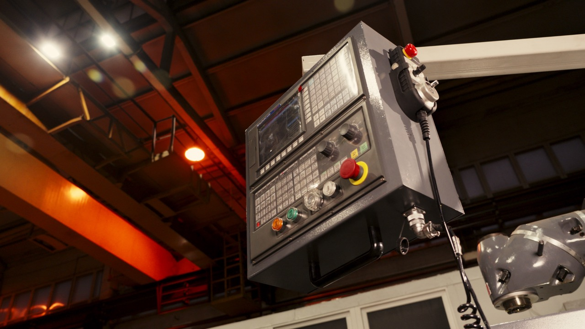
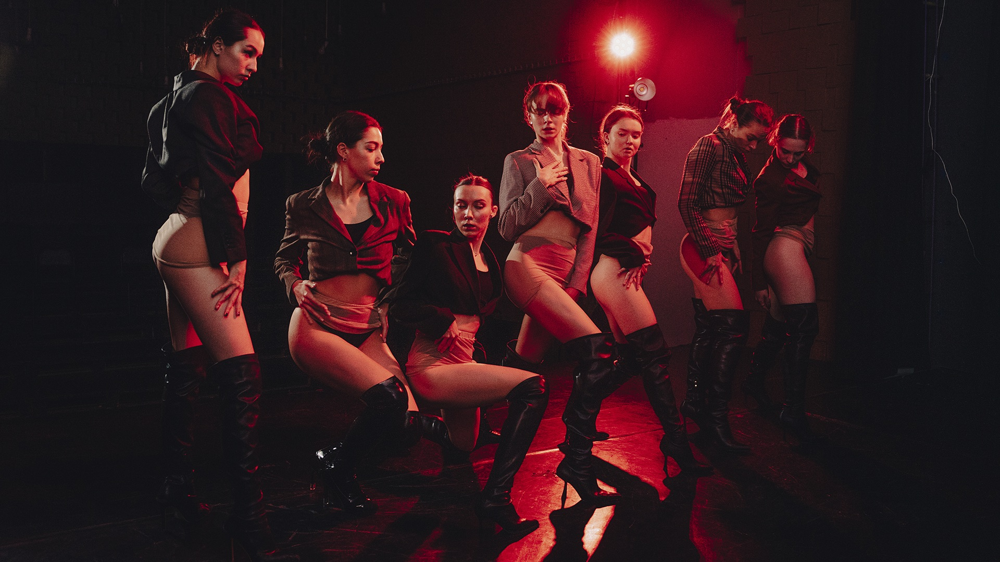
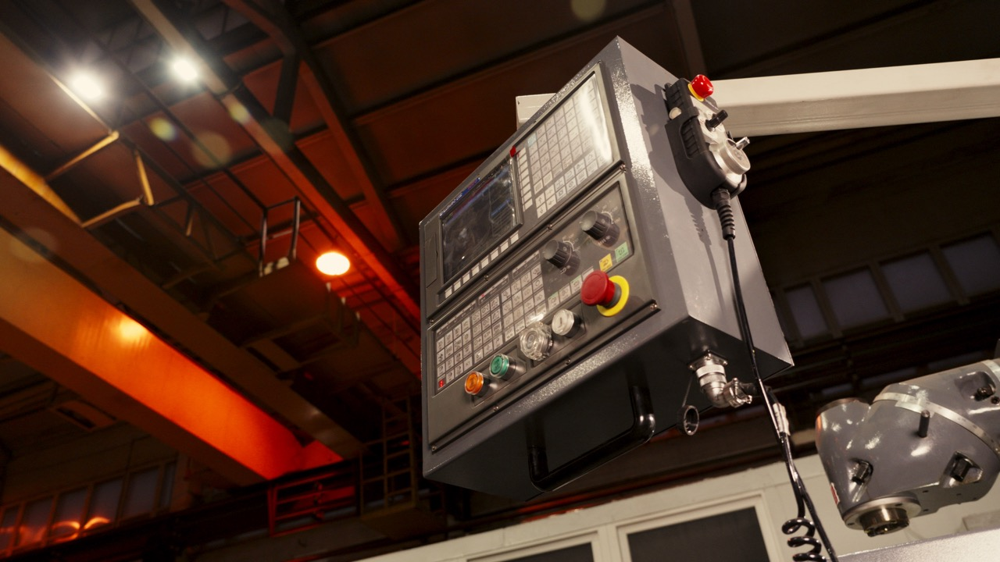
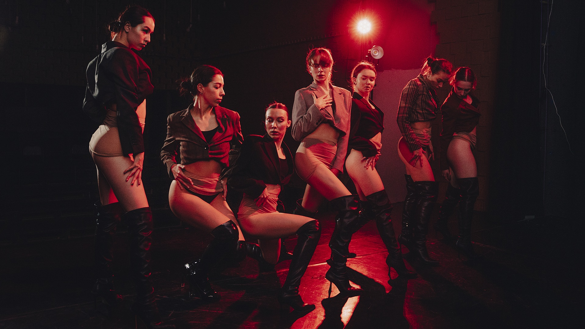

T2.1 · 1/50 · 24fps · 5600K · ISO800 · RAW · S35 · Cine Lenses ·
Key Light · Soft Fill · Rim · Practical · Ambient · Shadow · Contrast ·
Director · Cinematographer · Editor · Colorist · Post-Production · Delivery ·
Natural Light · Low-Key · Texture · Motion · Rhythm · Storytelling · Mood ·
T2.1 · 1/50 · 24fps · 5600K · ISO800 · RAW · S35 · Cine Lenses ·
Key Light · Soft Fill · Rim · Practical · Ambient · Shadow · Contrast ·
Director · Cinematographer · Editor · Colorist · Post-Production · Delivery ·
Natural Light · Low-Key · Texture · Motion · Rhythm · Storytelling · Mood ·
Glass · Matte Box · Filters · Grain · Sensor · Highlight Roll-Off · Dynamic Range ·
Blocking · Framing · Composition · Exposure · Lens Choice · Color Pipeline ·
Digital · Cine Film · Grain · Negative · RAW Workflow · Cine Color · Log ·
Presence · Texture · Light Over Shadow · Depth · Silence · Frame · Story ·
Glass · Matte Box · Filters · Grain · Sensor · Highlight Roll-Off · Dynamic Range ·
Blocking · Framing · Composition · Exposure · Lens Choice · Color Pipeline ·
Digital · Cine Film · Grain · Negative · RAW Workflow · Cine Color · Log ·
Presence · Texture · Light Over Shadow · Depth · Silence · Frame · Story ·
ARTEM
TESART
Трансляции, промышленная съёмка, свадьбы и авторские проекты.
DIRECTOR · CINEMATOGRAPHER